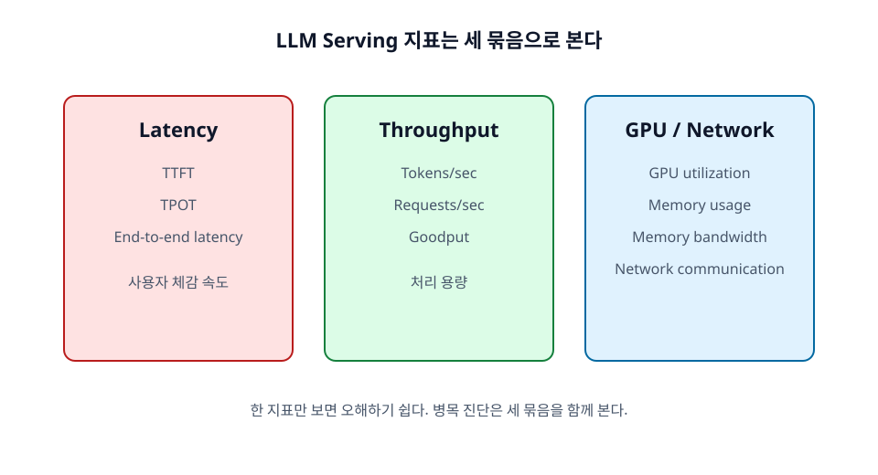

23장. 성능 지표 읽는 법¶
LLM serving 성능을 볼 때는 한 가지 숫자만 보면 안 된다. "tokens per second가 높다"는 말은 유용하지만, 사용자가 첫 token을 오래 기다리고 있다면 좋은 사용자 경험이라고 보기 어렵다. 반대로 첫 token은 빠르지만 전체 throughput이 낮으면 운영 비용이 커진다.
이 장에서는 latency, throughput, GPU 지표를 나누어 읽는 법을 정리한다.

학습 목표¶
- Latency, throughput, GPU 지표를 구분한다.
- TTFT, TPOT, end-to-end latency를 해석한다.
- Goodput의 의미를 이해한다.
23.1 Latency 지표¶
Latency는 사용자가 기다리는 시간이다. LLM에서는 latency를 TTFT, TPOT, end-to-end latency로 나누어 봐야 한다. 각 지표는 서로 다른 병목을 가리킨다.
빠른 해석 기준은 다음과 같다.
- TTFT가 나쁘면 prompt token 수, 대기열 길이, prefill latency를 먼저 본다.
- TPOT가 나쁘면 output token 속도, GPU memory bandwidth, batch 구성을 먼저 본다.
- End-to-end latency가 나쁘면 output token 수, streaming 여부, p95/p99 latency를 함께 본다.
23.1.1 TTFT¶
TTFT(Time To First Token)는 요청을 보낸 뒤 첫 output token이 도착하기까지의 시간이다. 긴 prompt, prefill queueing, tokenization, scheduler 대기, 첫 decode step이 영향을 준다.
TTFT가 나쁘면 사용자는 "아무 반응이 없다"고 느낀다. Chat UI에서는 TTFT가 사용자 경험에 매우 중요하다.
23.1.2 TPOT¶
TPOT(Time Per Output Token)는 output token 하나가 생성되는 평균 시간이다. Streaming 응답에서 token이 얼마나 부드럽게 이어지는지를 나타낸다. Decode 병목, KV cache 접근, batch size, memory bandwidth가 영향을 준다.
TTFT가 좋더라도 TPOT가 나쁘면 답변이 느리게 흘러나온다.
23.1.3 End-to-end latency¶
End-to-end latency는 요청 시작부터 전체 응답 완료까지의 시간이다. TTFT, decode 시간, output token 수, 네트워크 시간이 모두 포함된다. 긴 답변을 요구하면 end-to-end latency가 증가한다.
End-to-end latency만 보면 병목이 prefill인지 decode인지 구분하기 어렵다. 그래서 TTFT와 TPOT를 함께 기록해야 한다.
23.2 Throughput 지표¶
Throughput은 시스템이 단위 시간에 처리하는 일의 양이다. LLM serving에서는 requests per second와 tokens per second를 모두 봐야 한다.
23.2.1 Tokens per second¶
Tokens per second는 생성 또는 처리한 token 수를 시간으로 나눈 값이다. GPU가 실제로 얼마나 많은 token 작업을 수행하는지 보여 준다. Batch를 키우면 tokens/sec는 좋아질 수 있다.
하지만 tokens/sec가 높아도 latency SLO를 위반하면 서비스 품질은 나쁠 수 있다.
23.2.2 Requests per second¶
Requests per second는 초당 처리한 요청 수다. 짧은 요청이 많은 서비스에서는 유용하지만, 요청마다 token 길이가 다르면 오해가 생긴다. 10 token 요청 100개와 10,000 token 요청 100개는 같은 request count라도 GPU 부담이 다르다.
23.2.3 Goodput¶
Goodput은 SLO를 만족한 유효 처리량을 의미한다. 예를 들어 초당 1,000 token을 생성했지만 절반의 요청이 latency 기준을 넘겼다면, 실제 서비스 관점의 goodput은 낮다.
Production에서는 raw throughput보다 goodput을 더 중요하게 보는 경우가 많다.
23.3 GPU 지표¶
Latency와 throughput은 사용자와 서비스 관점의 지표다. GPU 지표는 병목 원인을 찾는 데 도움을 준다.
GPU 지표를 읽을 때는 다음 기준을 함께 둔다.
- GPU utilization이 낮으면 batch 부족, CPU/tokenizer 병목, scheduler 병목을 의심한다.
- GPU utilization이 높아도 항상 좋은 것은 아니다. Memory-bound 상태에서도 GPU가 바빠 보일 수 있다.
- GPU memory usage가 높으면 model weight 문제인지 KV cache 문제인지 분리해서 본다.
- Memory bandwidth가 높고 TPOT가 나쁘면 decode 단계의 KV cache 접근이 병목일 수 있다.
- Network traffic이 높으면 TP, PP, CP, DCP 같은 병렬화 통신 비용을 확인한다.
23.3.1 GPU utilization¶
GPU utilization은 GPU가 얼마나 바쁘게 일하는지 보여 준다. 낮은 utilization은 batch가 너무 작거나 CPU/tokenizer/scheduler 병목이 있을 수 있음을 시사한다. 하지만 utilization이 높다고 항상 좋은 것은 아니다. Memory bottleneck 상태에서도 GPU가 바빠 보일 수 있다.
23.3.2 GPU memory usage¶
GPU memory usage는 model weights, KV cache, activation, temporary buffer가 차지하는 공간을 포함한다. OOM 문제를 진단할 때 가장 먼저 본다.
Memory가 높다면 모델 크기 문제인지, max model length와 batch로 인한 KV cache 문제인지 구분해야 한다.
23.3.3 Memory bandwidth¶
Decode는 KV cache를 자주 읽기 때문에 memory bandwidth에 민감하다. TPOT가 나쁘고 GPU memory bandwidth가 높은 상황이라면 decode가 memory-bound일 수 있다.
23.3.4 Network communication¶
TP, PP, CP, DCP 같은 multi-GPU 병렬화에서는 GPU 간 통신이 중요하다. All-reduce, all-gather, all-to-all, KV transfer가 latency를 만들 수 있다. Multi-node에서는 network bandwidth와 latency를 반드시 봐야 한다.
정리¶
LLM serving 지표는 latency, throughput, GPU/network 지표를 함께 봐야 한다. TTFT는 첫 응답, TPOT는 streaming 속도, end-to-end latency는 전체 완료 시간을 나타낸다. Throughput은 tokens/sec와 requests/sec를 함께 보고, production에서는 SLO를 만족한 goodput이 중요하다.
점검 질문¶
- TTFT와 TPOT는 각각 어떤 사용자 경험과 연결되는가?
- Tokens per second만 높으면 좋은 serving 시스템이라고 볼 수 있는가?
다음 장으로¶
다음 장에서는 자주 발생하는 성능 문제를 증상별로 진단하는 방법을 다룬다.